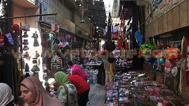
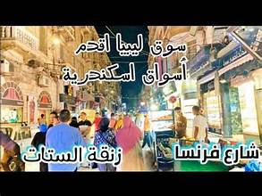
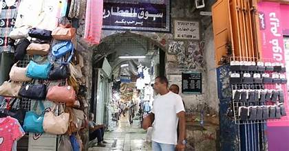
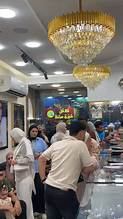
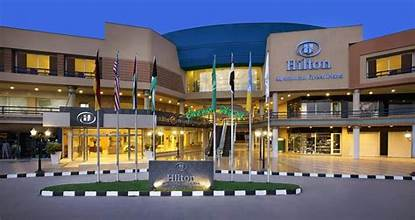
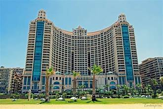
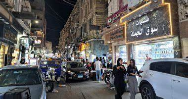
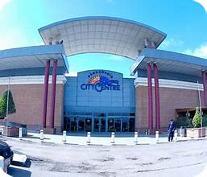
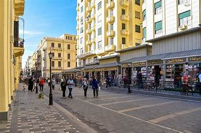
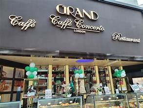

دليل سياحي لمدينة الإسكندرية
اكتشف أهم المحلات والأسواق بطريقة جذابة
اكتشف أهم المحلات والأسواق بطريقة جذابة
موجود في منطقة المنشية بقلب الإسكندرية.
أشهر سوق شعبي وتاريخي للملابس والإكسسوارات.
يتميز بممراته الضيقة والمزدحمة دائماً.
بيجمع بين التراث الشعبي والروح السكندرية.
وجهة أساسية للسياح لشراء الهدايا.

موجود في منطقة العصافرة بالإسكندرية.
بيضم منتجات تجارية متنوعة بأسعار منافسة.
مشهور ببيع الملابس والشنط والمصنوعات الجلدية.
بيجذب عدد كبير من الزوار يومياً.
بيعتبر من المراكز التجارية الحيوية في المدينة.
اضغط هنا لعرض موقع المكان
موجود في حي العطارين القديم بوسط المدينة.
أقدم سوق للأنتيكات والتحف والأثاث القديم.
بيتميز بمباني تاريخية ومحلات عمرها عشرات السنين.
وجهة مفضلة لهواة جمع العملات والقطع النادرة.
بيحسسك بروح الإسكندرية في القرن الماضي.
اضغط هنا لعرض موقع المكان
من أعرق محلات الذهب والمجوهرات في الإسكندرية.
مشهور بتصاميمه الملكية والراقية.
يقع في منطقة محطة الرمل بوسط البلد.
بيعتبر علامة مسجلة في عالم الذهب بمصر.
يقدم قطعاً فنية فريدة تناسب جميع الأذواق.
اضغط هنا لعرض موقع المكان
من أكبر وأشهر مراكز التسوق والترفيه في سموحة.
بيضم عدد كبير من المحلات التجارية العالمية والمحلية.
فيه منطقة مطاعم وسينمات وفندق ومنطقة ألعاب.
بيتميز بتصميم مفتوح ومساحات خضراء واسعة.
مكان مثالي للخروجات العائلية والتسوق في الإسكندرية.
اضغط هنا لعرض موقع المكان
من أفخم وأكبر مراكز التسوق في الإسكندرية ويطل على البحر مباشرة.
بيضم مجموعة كبيرة من المحلات التجارية لأشهر الماركات العالمية.
فيه منطقة مطاعم متنوعة (Food Court) وسينمات حديثة.
بيتميز بتصميمه المعماري الضخم والفريد في منطقة جليم.
بيعتبر وجهة أساسية للتسوق والترفيه لزوار الإسكندرية.
اضغط هنا لعرض موقع المكان
من أشهر الشوارع التجارية التاريخية في منطقة المنشية.
بيتميز ببيع الأقمشة والمفروشات وجهاز العرائس بأسعار متنوعة.
الشارع بيضم مباني ذات طراز معماري فرنسي قديم.
بيعتبر قبلة للمتسوقين من كل المحافظات مش بس الإسكندرية.
تجربة تسوق شعبية أصيلة في قلب المدينة القديمة.
اضغط هنا لعرض موقع المكان
يعتبر الوجهة الأولى للتسوق والترفيه في مدينة الإسكندرية.
بيضم مئات المحلات التجارية للماركات العالمية والمحلية.
فيه منطقة مطاعم ضخمة (Food Court) ومجمع سينمات وهايبر ماركت.
بيوفر تجربة تسوق متكاملة ممتعة لكل أفراد العائلة.
موجود في موقع حيوي على طريق الإسكندرية القاهرة الصحراوي.
اضغط هنا لعرض موقع المكان
من أقدم وأطول شوارع الإسكندرية، ومشهور بكونه مجمع للأديان والثقافة.
يعتبر أكبر سوق مفتوح لبيع الكتب القديمة والنادرة في المدينة.
الشارع بيضم محلات عريقة لبيع التحف، والآلات الموسيقية، والمشغولات اليدوية.
يتميز بجو ثقافي فريد يجمع بين الطلاب، المثقفين، والسياح.
وجهة مثالية لشراء الهدايا التذكارية الثقافية والكتب بأسعار بسيطة.
اضغط هنا لعرض موقع المكان
ركن خاص لبيع المنتجات التذكارية والراقية.
يقع في منطقة سموحة وسان ستيفانو.
يقدم منتجات تحمل شعار وروح مدينة الإسكندرية.
مكان رائع لشراء هدايا فخمة للأصدقاء.
اضغط هنا لعرض موقع المكان